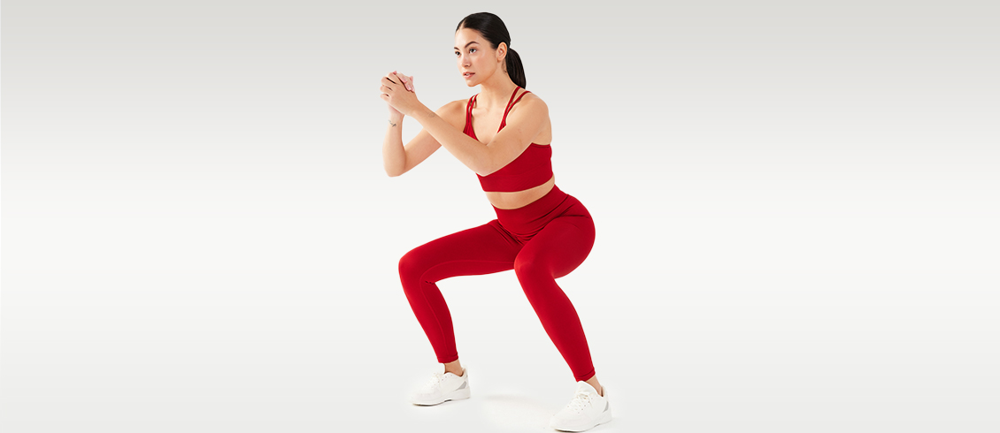
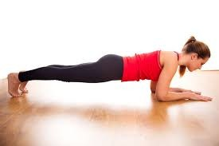
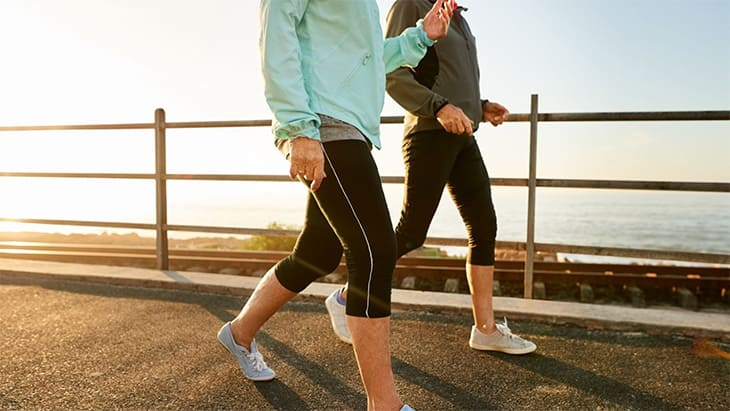

BAZI EGZERSİZ ÖRNEKLERİ
1. Squat (Çömelme)
Nasıl Yapılır: Ayaklar omuz genişliğinde açık, sırt dik. Kalçayı geriye doğru iterek çömel, sonra yavaşça kalk.
Tekrar: 3 set × 15 tekrar
Faydası: Bacak ve kalça kaslarını güçlendirir.
2. Plank (Tahta Duruşu)
Nasıl Yapılır: Dirsekler yerde, vücut düz bir çizgi halinde. Karın kaslarını sıkarak pozisyonu koru.
Süre: 3 set × 30 saniye
Faydası: Karın ve sırt kaslarını çalıştırır, duruşu düzeltir.
3. Yürüyüş ya da Tempolu Koşu
Süre: 20-30 dakika
Faydası: Kalp sağlığını destekler, yağ yakımına yardımcı olur, stres azaltır.
Not: Açık havada yapılması önerilir.